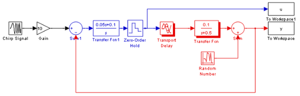
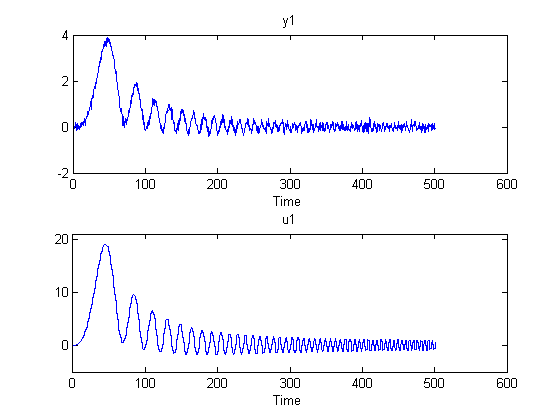
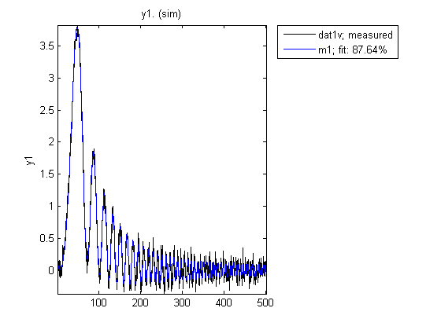
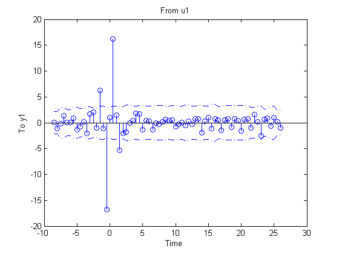
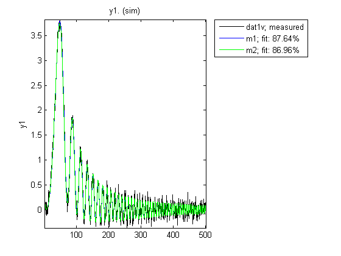
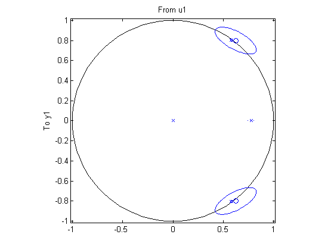
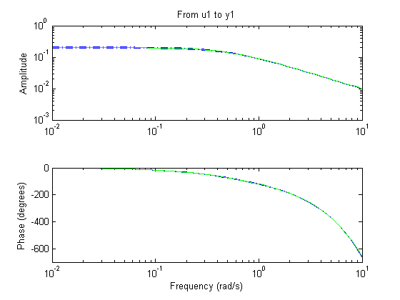
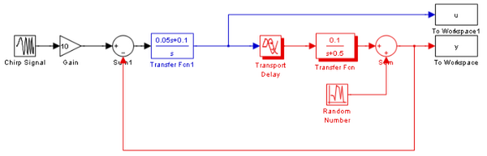
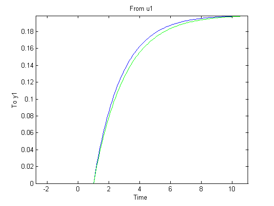
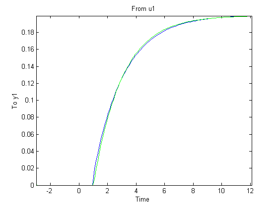

Estimating Continuous-Time Models using Simulink® Data
This demo illustrates how models simulated in Simulink® can be identified using System Identification Toolbox™. The demo describes how to deal with continuous-time systems and delays, as well as the importance of the intersample behavior of the input.
Contents
- Acquiring simulation data from a Simulink Model
- Estimating Discrete Models Using the Simulation Data
- Refining the Estimation
- Converting Discrete Model to Continuous-Time (LTI)
- Estimating Continuous-Time Model Directly
- Displaying the Uncertainty Information
- Accounting for Intersample Behavior in Continuous-Time Estimation
- Additional Information
if ~idchecksimulinkinstalled disp('This demo requires Simulink.') return end
Acquiring simulation data from a Simulink Model
Consider the system described by the following Simulink model:
open_system('iddemsl1') set_param('iddemsl1/Random Number','seed','0')
The red part is the system, the blue part is the controller and the reference signal is a swept sinusoid (a chirp signal). The data sampling time is set to 0.5 seconds.
This system can be represented using an idpoly structure:
m0 = idpoly(1,0.1,1,1,[1 0.5],'Ts',0,'InputDelay',1,'NoiseVariance',0.01)
Continuous-time IDPOLY model: y(t) = [B(s)/F(s)]u(t) + e(t)
B(s) = 0.1
F(s) = s + 0.5
Input delays (listed by channel): 1
This model was not estimated from data.
Let us simulate the model iddemsl1 and save the data in an iddata object:
sim('iddemsl1') dat1e = iddata(y,u,0.5); % The IDDATA object
Let us do a second simulation of the mode for validation purposes.
set_param('iddemsl1/Random Number','seed','13') sim('iddemsl1') dat1v = iddata(y,u,0.5);
Let us have a peek at the estimation data obtained during the first simulation:
plot(dat1e)
Estimating Discrete Models Using the Simulation Data
Let us begin by evaluating a default-order discrete model to gain some preliminary insight into the data characteristics:
m1 = pem(dat1e) % A default order model
State-space model: x(t+Ts) = A x(t) + B u(t) + K e(t)
y(t) = C x(t) + D u(t) + e(t)
A =
x1 x2 x3
x1 0.81577 0.13839 -0.14683
x2 -0.074073 0.30223 0.64262
x3 -0.19012 -0.51305 0.020674
B =
u1
x1 -0.0025802
x2 -0.028624
x3 -0.013072
C =
x1 x2 x3
y1 -5.5904 0.86885 -1.1864
D =
u1
y1 0
K =
y1
x1 0.010549
x2 0.016351
x3 0.0092664
x(0) =
x1 0
x2 0
x3 0
Estimated using PEM using SearchMethod = Auto from data set dat1e
Loss function 0.0105037 and FPE 0.0106926
Sampling interval: 0.5
Check how well the model reproduces the validation data
compare(dat1v,m1)
As observed, the validation data is predicted well by the model. To investigate more into the data characteristics, let us inspect the non-parametric impulse response computed using dat1e:
impulse(dat1e,'sd',3);
 Influences from negative lags are indicated. This is due to the regulator (output feedback). This means that the impulse response estimate cannot be used to determine the time delay. Instead, build several low order ARX-models with different delays and find out the best fit:
V = arxstruc(dat1e,dat1v,struc(1:2,1:2,1:10));
nn = selstruc(V,0) %delay is the third element of nn
nn =
2 2 3
The delay is determined to 3 lags. (This is correct: the deadtime of 1 second gives two lag-delays, and the ZOH-block another one.) The corresponding ARX-model can also be computed, as follows:
m2 = arx(dat1e,nn) compare(dat1v,m1,m2);
Discrete-time IDPOLY model: A(q)y(t) = B(q)u(t) + e(t)
A(q) = 1 - 0.2568 q^-1 - 0.3373 q^-2
B(q) = 0.04022 q^-3 + 0.04019 q^-4
Estimated using ARX on data set dat1e
Loss function 0.013301 and FPE 0.0134073
Sampling interval: 0.5
 Refining the Estimation
The two models m1 and m2 behave similarly in simulation. Let us now try and fine-tune orders and delays. Fix the delay to 3, and find a default order state-space model with that delay:
m3 = pem(dat1e,'nk',3);
Let as look at the estimated system matrix
m3.a % the A-matrix of the resulting model
ans =
0.7691 0.3792 -0.1136 0 -0.0113
-0.4454 0.4387 -0.6792 0 0.0034
0.0808 0.7213 0.7345 0 0.0068
0 0 0 0 0
0 0 0 1.0000 0
A third order dynamics is automatically chosen, which together with the 2 "extra" delays gives a 5th order state space model.
It is always advisable not to blindly rely upon automatic order choices. They are influenced by random errors. A good way is to look at the model's zeros and poles, along with confidence regions:
pzmap(m3,'sd',2) % Confidence region corresponding to 2 standard deviations
Clearly the two poles/zeros at the unit circle seem to cancel, indicating that a first order dynamics might be sufficient. Using this information, let us do a new first-order estimation:
m4 = pem(dat1e,1,'nk',3);
compare(dat1v,m4,m3,m1)

The compare plot shows that the simple first order model m4 with delay 3 gives a very good description of the data. Thus we shall select this model as our final result.
Converting Discrete Model to Continuous-Time (LTI)
Convert this model to continuous time, and represent it in transfer function form (if you have installed the Control System Toolbox™):
mc = d2c(m4); if iscstbinstalled tf(mc('m')) % 'm' means that only the measured input is considered else mc('m') end
Transfer function from input "u1" to output "y1":
0.09827
exp(-1*s) * ----------
s + 0.4903
A good description of the system has been obtained, as displayed above.
Estimating Continuous-Time Model Directly
The continuous time model can also be estimated directly, in a canonical state-space form. Since a continuous-time model cannot have nk >1, the remaining delay must be stored in the "InputDelay" property. The discrete model m4 has nk = 3 which represents a 1.5 seconds delay. If we use nk=1 (1 sample) in the continuous-time model, that leaves delay of 2 samples (= 1 second) to be represented as InputDelay:
m5 = pem(dat1e,1,'nk',1,'InputDelay',1,'ts',0,'ss','can'); if iscstbinstalled tf(m5('m')) else m5('m') end
Transfer function from input "u1" to output "y1":
0.09827
exp(-1*s) * ----------
s + 0.4903
Displaying the Uncertainty Information
To consider the uncertainty of the transfer function parameters, the state-space model can be converted to polynomial form, and displayed with parameter standard deviations as:
present(idpoly(m5))
Continuous-time IDPOLY model: A(s)y(t) = B(s)u(t) + C(s)e(t)
A(s) = s + 0.4903 (+-0.007786)
B(s) = 0.09827
C(s) = s + 0.3215 (+-0.03731)
Input delays (listed by channel): 1
Estimated using PEM using SearchMethod = Auto on data set dat1e
Loss function 0.0104603 and FPE 0.0105441
Created: 29-Jun-2010 23:34:25
Last modified: 29-Jun-2010 23:34:26
The estimated model's (m5) step and frequency responses can be compared with the true system m0:
step(m5,m0)
bode(m5,m0,'sd',3)
 Good agreement on the model characteristics is observed.
Accounting for Intersample Behavior in Continuous-Time Estimation
When comparing continuous time models computed from sampled data, it is important to consider the intersample behavior of the input signal. In the demo so far, the input to the system was piece-wise constant, due to the Zero-order-Hold (zoh) circuit in the controller. Now remove this circuit, and consider a truly continuous system. The input and output signals are still sampled a 2 Hz, and everything else is the same:
open_system('iddemsl3') sim('iddemsl3') dat2e = iddata(y,u,0.5);
Discrete time models will still do well on these data, since when they are adjusted to the measurements, they will incorporate the sampling properties, and intersample input behavior (for the current input). However, when building continuous time models, knowing the intersample properties is essential. First build a model just as for the ZOH case:
m6 = pem(dat2e,1,'nk',1,'ud',1,'ts',0,'ss','can'); % continuous-time estimation ('ud' is short for 'InputDelay') if iscstbinstalled tf(m6('m')) else m6('m') end
Transfer function from input "u1" to output "y1":
0.1118
exp(-1*s) * ----------
s + 0.5601
Let us compare the estimated model (m6) against the true model (m0):
step(m6,m0) % Compare with true system
 The agreement is now not so good. We may, however, include in the data object information about the input. As an approximation, let it be described as piecewise linear (First-order-hold, FOH) between the sampling instants. This information is then used by the estimator for proper sampling:
dat2e.Intersample = 'foh'; m7 = pem(dat2e,1,'nk',1,'ud',1,'ts',0,'ss','can'); % new estimation with correct intersample behavior if iscstbinstalled tf(m7('m')) else m7('m') end
Transfer function from input "u1" to output "y1":
0.01283 s + 0.09264
exp(-1*s) * -------------------
s + 0.4613
Let us look at the step response comparison again:
step(m7,m0) % Compare with true system
 This model (m7) gives a much better result than m6. This concludes this demo.
Some clean up:
bdclose('iddemsl1'); bdclose('iddemsl3');
Additional Information
For more information on identification of dynamic systems with System Identification Toolbox visit the System Identification Toolbox product information page.